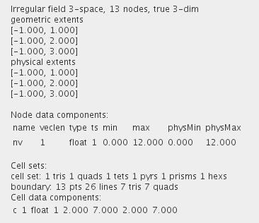

TEST CELLS
The module provides an example of a small 3D irregular scalar field.
Output data
The output field is irregular 3D 3-space.

Presentation parameters
Presentation parameters are described in the common interfaces section under the Presentation Panel entry.